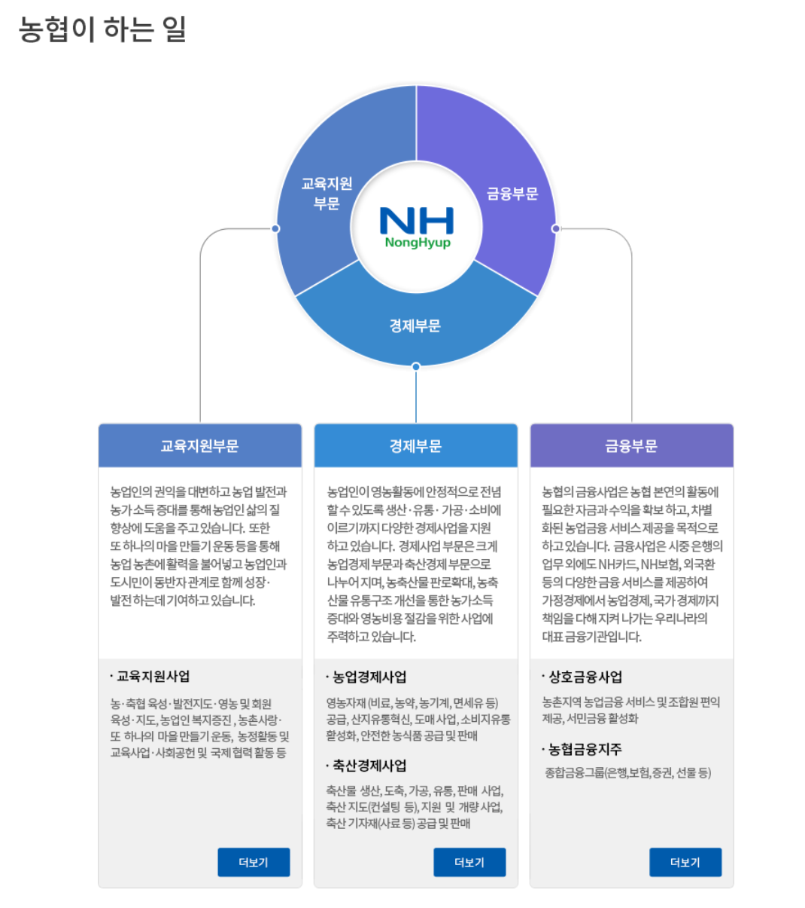

Home

- 이름: 임종호
- 나이: 2001.09.01
- 거주지: 인천광역시 계양구
- 학교/전공: 공주대학교(천안) / 소프트웨어학과
- 전화번호: 010-9958-4502
- 이메일: imjongho135@gmail.com
- GitHub: 깃허브 바로가기
- 관심기업: 지역(단위)농협, 농협 홈페이지 바로가기
About Me
관심 기술 및 관련 기업 상세 내용(글 그림 등 자유 양식)
농협이란?"농협"은 "농업협동조합"의 줄임말입니다. 농업과 협동조합의 의미를 이해하면 농협을 정의할 수 있습니다. |
|
농협심볼의 의미[V]꼴은 [농]자의 [ㄴ]을 변형한 것으로 싹과 벼를 의미하며 농협의 무한한 발전을, [V]꼴을 제외한 아랫부분은 [업]자의 [ㅇ]을 변형한 것으로 원만함과 돈을 의미하며 협동단결을 상징합니다. |
농협의 구조별 구분농협은 농업 분야에서 탄생한 협동조합이라고 정의했습니다. 농업은 반드시 필요한 요소이기 때문에 각 지역마다, 동네마다 협동조합이 생겨났고
숫자가 많아지니 농업과 연관이 되는 축산업을 중점적으로 하는 축협도 생기고, 인삼을 주로 취급하는 인삼협 등이 생기게 되었습니다.
그러면 누군가는 대장이 되어 이토록 많은 농업협동조합들을 관리해야 하는데, 그것이 농협중앙회입니다. 원래는 축협중앙회가 따로 있었으나 농협중앙회로 합병되었습니다.
쉽게 말해, 농협중앙회가 머리를 담당하고 지역농협은 그 밑에서 손과 발을 담당한다고 생각됩니다. |
|
지역농협(NH농협)과 NH농협은행의 차이
지역농협(NH농협)과 NH농협은행의 가장 큰 차이점은 농협이라는 글자 뒤에 "은행"이 붙느냐 붙지 않느냐입니다.
"은행"이 붙어 있는 NH농협은행은 국가에서 인정하는 제1금융권 은행으로, 일반 상업은행과 같은 역할을 합니다.
반면, "은행"이 붙지 않은 지역농협은 제2금융권에 속하며, 상호금융 업무를 포함하여 지역 단위로 운영됩니다.
농협중앙회는 직접적으로 은행 업무를 하지 않고, NH농협은행을 따로 구성해 자체적으로 운영하며, 농업 관련 금융 서비스를 제공합니다.
지역농협은 각 지역에서 농업인들을 위한 금융 서비스와 협동조합 업무를 담당하며, NH농협이라는 이름으로 운영됩니다.
따라서, 농협중앙회는 중앙 조직으로서 NH농협은행을 통해 전국적인 금융 서비스를 제공하고, 지역농협은 각 지역에서 농업인들과 밀접한 관계를 유지하며
금융과 협동조합 업무를 수행하는 구조로 이해할 수 있습니다. |
|
|  |
농협이 하고 있는 노력1. 농민 및 지역사회 지원 |
지역농협 채용 과정과 직급지역농협 채용 홈페이지 바로가기 |
주제 관련 Future Plan 진로에 연관된 내용으로 관심 기술 공부 계획 및 취업(혹은 대학원, 창업 등) 준비 계획 작성 (공모전, 인턴십, 논문, 기타 취업 준비 계획)
저는 무언가 거창한 목표를 이루기 위해 대학에 온 것이 아니라, 소소하게 부모님께 용돈을 드리며 행복하게 살 수 있는 직장을 구하기 위해 진학했습니다.
그래서 범용성이 높은 이공계 중에서도 컴퓨터공학부를 선택했습니다. 대학에서 배운 알고리즘과 체계적인 사고 방식은 일상생활에서 많은 도움을 주고 있습니다.
특히, 코딩할 때 체계적으로 생각하는 방법은 문제 해결 능력을 키우는 데 크게 기여했습니다. 저는 관심있는 특정 기술에 집중하기보다는,
강의 시간에 다양한 기술을 폭넓게 배우며 학점을 관리하는 데 중점을 두고 있습니다. 이 과정을 통해 모든 기술에 대해 얕고 넓게 이해함으로써, 종합적인 역량을 키워가고 있습니다.
최종 목표: 지역농협 취업
취업 준비 계획으로 매 순간마다 열심히 최선을 다해 그리디(greedy)하게 최종목표까지 도달할 것입니다.
일단 졸업을 해야 하기에 가장 큰 장애물인 자격증 및 어학능력에 해당하는 자격 취득점수 합계를 3점 이상 취득해야 합니다.
그러기 위해서 2024년도에 정보처리산업기사 자격증과 컴퓨터활용능력 자격증에 응시하고 2025년도에는 정보처리기사 자격증에 응시할 것입니다.
어학 점수는 현실적으로 토익 450점 이상을 목표로 합니다. 졸업 요건으로 자격증 말고도 공모전 1회 출품이나 미래설계가 있지만,
미래설계는 꾸준히 학기별로 모으고 있고 공모전은 수상 못해도 상관없어서 부수적으로 해결 가능합니다. 졸업에 성공하면 지역농협에 도전합니다.
그러므로, 졸업 전까지 정보처리산업기사(2점), 정보처리기사(3점), 컴퓨터활용능력 2급(1점), 토익 450점 이상(1점)을 계속 도전하여 3점을 채울 생각입니다.
무엇(What)을 어떻게(How) 준비해야 자격증을 취득하기 쉬울까 고민해보니 자격증의 특성상 문제의 유형이나 패턴이 비슷하게 나온다는 점에서 정했습니다.
저는 누군가 잘 정리해 놓은 관련 자격증의 문제집과 CBT 전자문제집을 가지고 문제를 최대한 많이 풀어보는식으로 준비할 것입니다.
CBT: Computer Based Test의 줄임말, 컴퓨터를 기반으로 한 시험
CBT 모바일 바로가기

지역농협 공부 계획
원서접수: 지역농협 채용 홈페이지 바로가기
지역 농협을 준비하는 사람들이 가장 많이 보는 책 이름이 고시넷 NCS 지역농협 6급 통합 기본서입니다. 책 이름이 생소하지만 위의 설명을 읽었다면 바로 알 수 있습니다.
지역농협: 농협중앙회/지역농협 등 채용은 각각 별도로 진행됩니다. 저는 지역농협에 들어가고 싶기에 농.축협이나 지역농협이라고 써진 책을 봐야 합니다.
6급: 공무원과 달리 농협은 신입사원을 6급으로 칭합니다. 따라서, 신입사원으로 들어가야하는 저에게 맞는 책입니다.
고시넷: 한국에서 각종 시험 관련 정보를 제공하는 온라인 사이트 및 출판사입니다. 매년 변화하는 시험정보 자료나 책을 제공하는 회사입니다.
NCS: National Competency Standards 국가직무능력표준을 의미, 산업현장에서 직무를 수행하기 위해 요구되는 지식.기술.태도 등의 내용을 국가가 체계화한 기준입니다.
통합 기본서: 지역농협 필기에 필요한 문제들과 채용에 필요한 정보들이 들어 있습니다.
파트1: 영역별 기본학습 (의사소통능력, 수리능력, 문제해결능력, 자원관리능력, 조직이해능력)
파트2: 실전 연습이 가능한 기출 예상문제 5개정도 있음
파트3: 인성검사
파트4: 면접 가이드
2025년 정보처리기사 자격증을 딴 후에 바로 시작할 예정입니다. 필요시 인강을 들으면서 책을 달달 외우며 계속 공부하면 합격할 수 있다고 생각합니다.
정보처리산업기사 공부 계획
원서접수: Q-Net 바로가기
상세정보는 Q-Net에 있습니다.
정기시험이라 1년에 3번 접수를 받기에 기말고사 끝나고 2024년도 마지막 원서접수가 있어서 접수할 것입니다.
원서접수 후 필기까지 텀이 있고 또 실기까지 텀이 있어서 텀(사이 기간)에 이기적 문제집을 풀고 필기와 실기를 볼 예정입니다.
정보처리기사 공부 계획
원서접수: Q-Net 바로가기
상세정보는 Q-Net에 있습니다.
정보처리산업기사 자격증을 취득한 후, 정보처리기사 자격증에 도전할 계획입니다.
정기시험이라 1년에 3번 접수를 받기에 2025년 1년 동안 될 때까지 계속 도전합니다.
필기시험은 산업기사와 비슷한 유형으로 구성되지만, 난이도가 더 높기에
기출문제를 풀면서 부족한 부분을 보완하고, 실기시험에서는 심화된 프로그래밍 문제를 집중적으로 연습할 것입니다.
컴퓨터활용능력 2급 공부 계획
원서접수: 대한상공회의소 자격평가사업단
상세정보는 대한상공회의소 자격평가사업단에 있습니다.
상시 시험이라 부담은 없고 4학년 전에는 무조건 따고자 합니다.
CBT 위주로 컴퓨터 일반 과목은 기출문제를 중심으로 학습하고, 스프레드시트 일반 과목은 실기와 필기 시험을 같이 준비할 예정입니다.
토익 공부 계획
원서접수: ETS TOEIC 바로가기
상세정보는 토익 공식사이트에 있습니다.
목표 점수는 450점 이상으로 한달에 1번 모의고사를 풀어 실전 감각을 익히고 한 학기당 1번은 모의토익을 볼 것입니다.
듣기 파트는 다양한 영어 듣기 자료를 활용하여 청취 능력을 향상시키고, 독해 파트는 기출문제를 반복해서 풀어 문제 유형에 익숙해지도록 할 것입니다.
본인 소개 페이지 작성(2022 삼성전자 비경력직 자소서 항목 기반으로 선정함)
Q. 농협 지원 동기와 이루고 싶은 목표
Q. 본인 성장 과정(가장 큰 영향을 끼친 사건, 인물 등을 포함하여 작성 - 작품 속 가상인물도 가능)
Q. 최근 사회 이슈 중 중요하다고 생각되는 한 가지를 선택하고 자신의 견해 기술
Q. 프로젝트/과제 중 기술적으로 가장 어려웠던 부분과 해결 방안에 대해 서술 (과제 개요, 어려웠던 점, 해결 방법, 결과 포함)
Q. 본인 역량에 대해 자유롭게 기술
Skill
Portfolio
노동자 인력 관리 프로그램
설명: 처음으로 mySQL 사용하여 CRUD 기본기를 충실히 다진 소켓 통신 자바 프로젝트
실제로 물류센터 알바를 해본 경험을 토대로 일용직들이 출근할 날짜를 선택하고 관리자가 명단을 확정지을 수 있게 만든 스윙 프로젝트
기술: Java, MySQL
일자: 2023년(2학년)
GitHub에서 보기
수강신청 페이지
설명: 소프트웨어공학에서 배운 화면 설계, 유스케이스 다이어그램, 시퀀스 다이어그램, eventFlow 등을 충분히 고려해서 만들어본 수강신청 웹 페이지
기술: HTML, CSS, JavaScript, php, Apache, MySQL
일자: 2024년(3학년)
GitHub에서 보기"본인 소개/관심 기술/관심 기업" 웹페이지
설명: 진로 성찰 / 자기 평가 / 취업 준비를 위해 자소서 등 자기자신을 점검하는 시간을 가지고 표현하는 웹 페이지
기술: HTML, CSS, JavaScript
일자: 2024년(3학년)
GitHub에서 보기사진관 예약 앱
설명: 다수의 사용자가 여러 사진관 중에 한곳을 선택해 방문 예약과 대여를 쉽게 할 수 있도록 만든 앱 프로젝트
기술: AndroidStudio, FireBase(Storage, NoSQL)
일자: 2024년(3학년)
GitHub에서 보기